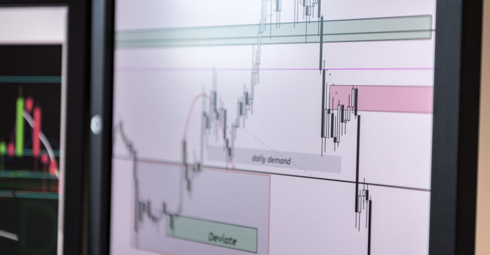

Un Nouveau Cap pour la Malaisie : L'Arrivée d'Abdul Halim Bin Aman
L'actualité financière mondiale est souvent rythmée par des annonces macroéconomiques, des décisions de banques centrales ou des tensions géopolitiques. Pourtant, il arrive que des nominations moins médiatisées, au cœur de la gouvernance d'un pays, aient des répercussions tout aussi profondes sur les marchés. C'est le cas en Malaisie, où la désignation d'Abdul Halim Bin Aman comme nouveau chef de la Commission Malaisienne Anti-Corruption (MACC) marque un tournant potentiellement significatif. Sa prise de fonction, prévue pour le mois prochain, succédera à celle d'Azam Baki, dont le mandat touche à sa fin. Cette transition, à première vue une simple passation de pouvoir, est en réalité scrutée de près par les investisseurs, les analystes et, bien entendu, les agents d'intelligence artificielle qui opèrent sur le marché des changes.
👉 À lire : Kushner & Witkoff au Pakistan : Implications pour le Forex ?
Pourquoi une telle attention pour un poste qui ne gère pas directement la politique monétaire ou fiscale ? La réponse réside dans la corrélation intrinsèque entre la perception de la corruption, la stabilité institutionnelle et la confiance des investisseurs. Un pays perçu comme luttant efficacement contre la corruption attire davantage de capitaux étrangers, stabilise sa monnaie et offre un environnement plus prévisible pour les affaires. À l'inverse, l'incertitude quant à l'intégrité des institutions peut entraîner une fuite des capitaux et une dépréciation de la devise locale. La Malaisie, acteur économique clé en Asie du Sud-Est, se trouve à un carrefour où le renforcement de sa gouvernance est essentiel pour consolider sa position sur la scène internationale.
👉 À lire : Fusions Transatlantiques : L'IA, un Levier Incontournable ?
Le rôle du MACC est vital. Il ne s'agit pas seulement de poursuivre les coupables, mais de prévenir la corruption à tous les niveaux de l'administration et du secteur privé, créant ainsi un écosystème plus sain. « La crédibilité d'un pays sur la scène financière internationale est directement proportionnelle à son engagement envers la transparence et l'intégrité », affirme un analyste financier fictif, Dr. Evelyn Sharma, spécialiste des marchés émergents. « La nomination d'un nouveau chef anti-corruption en Malaisie n'est pas un événement isolé ; c'est un signal fort envoyé aux marchés, qui sera analysé pour déterminer l'orientation future du pays en matière de bonne gouvernance. » Pour les systèmes de trading forex automatisés par IA, ces signaux, même subtils, sont des points de données cruciaux. Ils sont intégrés dans des modèles complexes qui évaluent le risque politique, la perception économique et le sentiment général du marché, influençant ainsi les décisions d'achat ou de vente de paires de devises impliquant le Ringgit malaisien (MYR).
Cet article explorera en profondeur les implications de cette nomination, en analysant le contexte malaisien, le profil du nouveau chef, les défis à relever, et surtout, comment ces dynamiques peuvent influencer les marchés financiers, en particulier le marché du forex, où les agents IA sont de plus en plus sophistiqués pour déchiffrer ces complexités.

Le Contexte Malaisien : Une Nation Face à Ses Démonstrations de Gouvernance
Pour comprendre pleinement l'importance de la nomination d'Abdul Halim Bin Aman, il est impératif de se pencher sur le paysage politique et économique de la Malaisie. Ce pays d'Asie du Sud-Est, membre de l'ASEAN, est une économie dynamique, riche en ressources naturelles et dotée d'un secteur manufacturier robuste. Cependant, comme de nombreuses nations en développement rapide, elle n'a pas été épargnée par les scandales de corruption qui ont parfois ébranlé la confiance publique et celle des investisseurs internationaux. L'affaire 1MDB, par exemple, a laissé une cicatrice profonde, soulignant la vulnérabilité du système aux pratiques illicites à grande échelle et la nécessité impérieuse de réformes structurelles.
Azam Baki, le chef sortant, a eu un mandat sous haute pression. Bien qu'il ait supervisé plusieurs enquêtes importantes, son propre rôle a parfois été remis en question, illustrant la difficulté de maintenir une indépendance totale dans un environnement politique complexe. Le MACC est une institution jeune, créée en 2009, et son efficacité est constamment mise à l'épreuve. La perception publique de son indépendance et de son impartialité est essentielle pour sa légitimité. Un nouveau leadership offre l'opportunité de renouveler cet engagement et de redorer le blason de l'agence.
Les défis sont multiples : la corruption s'exprime sous diverses formes, du petit pot-de-vin quotidien aux schémas complexes de détournement de fonds impliquant des élites politiques et économiques. La lutte contre ces fléaux nécessite non seulement des lois robustes et une application stricte, mais aussi une volonté politique inébranlable et un soutien public. Sans ces piliers, même le chef le plus intègre peut se retrouver entravé. Les marchés financiers, et en particulier le marché du forex, sont des baromètres sensibles à ces dynamiques internes. Une Malaisie perçue comme plus transparente et plus stable verra son Ringgit (MYR) bénéficier d'une meilleure appréciation, car les investisseurs seront plus enclins à y placer leurs capitaux.
Les agences de notation de crédit, comme Moody's ou S&P, intègrent également la qualité de la gouvernance et la perception de la corruption dans leurs évaluations. Une amélioration dans ce domaine peut potentiellement conduire à une révision à la hausse de la note souveraine de la Malaisie, réduisant ainsi le coût de l'emprunt pour le gouvernement et les entreprises, et rendant le pays plus attractif pour les investisseurs étrangers. « Chaque point de pourcentage gagné en indice de perception de la corruption peut se traduire par des milliards de dollars d'investissements supplémentaires et une plus grande résilience de la monnaie », souligne un rapport du Fonds Monétaire International. C'est cette interconnexion que les systèmes de trading automatisé sont désormais capables de décrypter, bien au-delà des simples données économiques brutes, en intégrant des analyses de sentiment et de risques géopolitiques en temps réel.
Abdul Halim Bin Aman : Un Profil Sous la Loupe et les Attentes du Marché
Qui est Abdul Halim Bin Aman, et que peut-on attendre de son mandat à la tête du MACC ? Le profil du nouveau chef anti-graft est scruté avec une attention particulière, car son parcours, son expérience et sa réputation sont autant d'indices sur l'orientation future de la lutte contre la corruption en Malaisie. Bien que les détails spécifiques de son passé professionnel ne soient pas encore largement diffusés, sa nomination par le gouvernement suggère une confiance dans sa capacité à diriger une institution aussi sensible et cruciale. Les attentes sont élevées, tant de la part du public malaisien, lassé par les scandales passés, que de la communauté financière internationale.
Un nouveau leader apporte souvent une nouvelle énergie, une nouvelle perspective et, potentiellement, de nouvelles stratégies. Abdul Halim Bin Aman pourrait choisir de se concentrer sur la prévention, en mettant en œuvre des programmes d'éducation et de sensibilisation, ou d'adopter une approche plus agressive en matière de poursuites, ciblant les réseaux de corruption à haut niveau. « La clé sera de démontrer une indépendance inébranlable et une détermination à appliquer la loi sans favoritisme », observe un expert en gouvernance. « La perception de l'équité est primordiale pour restaurer la confiance, et un nouveau visage peut parfois offrir ce nouveau départ nécessaire. »
Les marchés financiers réagissent à la fois aux faits et aux perceptions. Si Abdul Halim Bin Aman parvient à instaurer un sentiment de renouveau et de rigueur, cela pourrait être un catalyseur positif pour le Ringgit malaisien. Les investisseurs étrangers, qui recherchent la stabilité et la prévisibilité, seront plus enclins à investir dans des actifs malaisiens. Cela se traduirait par une demande accrue pour la monnaie locale, renforçant sa valeur face aux grandes devises comme le dollar américain (USD) ou l'euro (EUR). À l'inverse, tout signe de faiblesse, de compromission ou de manque d'indépendance pourrait rapidement éroder cette confiance, entraînant une pression à la baisse sur le MYR.
Les algorithmes de trading alimentés par l'IA sont particulièrement doués pour capter ces changements de sentiment. Ils analysent non seulement les annonces officielles, mais aussi les réactions des médias, les commentaires des analystes, et même les tendances sur les réseaux sociaux pour évaluer la perception générale du marché. Un agent IA de pointe ne se contenterait pas de lire l'annonce de la nomination ; il analyserait les articles de presse locaux et internationaux, les déclarations des experts, et les données historiques sur l l'impact des changements de leadership sur les marchés émergents pour anticiper les mouvements du Ringgit. C'est cette capacité à intégrer une multitude de facteurs qualitatifs et quantitatifs qui donne un avantage significatif aux systèmes de trading automatisés dans un environnement aussi complexe et nuancé que le forex.

L'Impact sur la Confiance des Investisseurs et le Ringgit Malaisien
La confiance des investisseurs est le moteur essentiel de toute économie. En Malaisie, l'arrivée d'un nouveau chef à la MACC est perçue comme un signal fort, potentiellement capable de redynamiser cette confiance. Une lutte anti-corruption efficace a des avantages tangibles et mesurables. Premièrement, elle réduit le coût des affaires. Les entreprises n'ont plus à budgétiser pour des paiements illicites, ce qui améliore leurs marges et rend le pays plus compétitif. Deuxièmement, elle assure une plus grande équité et une meilleure application des contrats, des facteurs cruciaux pour les investisseurs étrangers qui cherchent à protéger leurs actifs.
Historiquement, les pays qui ont réussi à améliorer leur indice de perception de la corruption ont souvent vu affluer les investissements directs étrangers (IDE). Ces IDE ne se contentent pas d'apporter des capitaux ; ils transfèrent également des technologies, créent des emplois et stimulent la croissance économique. Pour la Malaisie, cela pourrait signifier une diversification de son économie, une modernisation de ses infrastructures et une augmentation de ses exportations. Tous ces éléments sont des facteurs positifs pour la solidité de sa monnaie, le Ringgit malaisien (MYR).
Comment cela se traduit-il sur le marché du forex ? Une augmentation des IDE signifie que les entreprises étrangères convertissent leurs devises (USD, EUR, JPY, etc.) en MYR pour financer leurs opérations en Malaisie. Cette demande accrue pour le Ringgit pousse sa valeur à la hausse. De même, si les investisseurs de portefeuille – ceux qui achètent des actions ou des obligations malaisiennes – perçoivent une amélioration de la gouvernance, ils seront plus enclins à investir, créant également une demande pour le MYR. « Le Ringgit est un indicateur direct de la santé perçue de l'économie malaisienne et de sa gouvernance », explique Dr. Amir Khan, économiste spécialisé dans l'Asie du Sud-Est. « Tout ce qui renforce la perception de l'intégrité nationale aura un effet haussier sur la monnaie. »
Cependant, l'impact n'est pas automatique ni instantané. Il faut du temps pour que les réformes portent leurs fruits et pour que la perception change réellement. Les marchés sont patients mais exigeants. Le succès d'Abdul Halim Bin Aman sera mesuré non seulement par le nombre d'affaires résolues, mais aussi par l'établissement d'une culture d'intégrité durable. Pour les agents IA de trading forex, cela signifie que l'analyse doit être continue et adaptative. Ils ne se contenteront pas d'une annonce ; ils surveilleront les indicateurs de suivi, les rapports d'ONG, les déclarations gouvernementales et les flux d'investissement pour ajuster leurs positions en temps réel, anticipant les mouvements du MYR sur le moyen et long terme, tout en réagissant aux volatilités de court terme induites par chaque nouvelle information.
Conséquences Macroéconomiques et Géopolitiques : Au-delà des Frontières
L'effet d'une lutte anti-corruption renouvelée en Malaisie s'étend bien au-delà de ses frontières, touchant à des dynamiques macroéconomiques et géopolitiques plus larges. Premièrement, sur le plan macroéconomique, une gouvernance améliorée peut entraîner une meilleure allocation des ressources. Moins de fonds détournés signifie plus d'argent disponible pour les infrastructures, l'éducation, la santé et la recherche et développement. Ces investissements, à leur tour, stimulent la productivité, la croissance économique à long terme et la compétitivité du pays sur les marchés mondiaux.
Les agences de notation de crédit sont particulièrement attentives à ces évolutions. Une Malaisie perçue comme plus transparente et plus stable pourrait voir sa note de crédit améliorée, ce qui réduirait le coût de l'emprunt pour le gouvernement et les entreprises. Un coût de l'emprunt plus faible signifie plus de capital disponible pour l'investissement et l'expansion, ce qui est un signe positif pour l'économie globale et, par conséquent, pour la valeur de sa monnaie. Une note de crédit supérieure attire également un éventail plus large d'investisseurs institutionnels qui ont des mandats d'investissement stricts concernant la qualité de crédit des pays.
Sur le plan géopolitique, la réputation d'un pays en matière de gouvernance est un atout diplomatique. Une Malaisie intègre et stable peut renforcer son rôle au sein de l'ASEAN, en tant que modèle de développement et de bonne gestion. Elle peut également améliorer ses relations bilatérales avec des partenaires commerciaux clés, attirant davantage de partenariats et d'accords commerciaux mutuellement avantageux. Dans un monde de plus en plus interconnecté, la perception de l'intégrité nationale est un facteur de puissance douce.
« La stabilité politique et la bonne gouvernance sont les fondations sur lesquelles se construit la prospérité durable, et elles sont devenues des critères d'investissement aussi importants que les fondamentaux économiques », analyse un rapport de la Banque Mondiale. Ce sont précisément ces facteurs qualitatifs que les agents IA de trading forex les plus avancés intègrent dans leurs modèles. Au-delà des chiffres du PIB ou des taux d'intérêt, l'IA est capable d'analyser des centaines de milliers d'articles de presse, de déclarations politiques, de rapports d'ONG et de données de sentiment pour évaluer le risque géopolitique et la qualité de la gouvernance. Ces analyses, combinées à des données techniques et macroéconomiques, permettent aux agents IA de développer une vue holistique de la situation, leur permettant d'anticiper les mouvements du Ringgit face aux autres devises et d'optimiser leurs stratégies de trading 24h/24, 7j/7, sur la base d'une compréhension profonde des interconnexions mondiales.

Le Forex et l'Ère de l'IA : Anticiper les Fluctuations Malaisiennes
Le marché du forex est par nature un environnement de réaction et d'anticipation. Chaque annonce, chaque changement politique, chaque donnée économique est une impulsion qui peut provoquer des mouvements de prix. La nomination d'Abdul Halim Bin Aman en Malaisie est un exemple parfait d'un événement qui, bien que ne semblant pas directement lié aux taux d'intérêt ou à l'inflation, peut avoir un impact profond sur la valeur du Ringgit malaisien (MYR). C'est là que l'intelligence artificielle (IA) révèle toute sa puissance dans le trading forex.
Un agent IA de trading n'est pas un être humain. Il n'est pas sujet aux émotions, aux biais cognitifs ou à la fatigue. Au lieu de cela, il est programmé pour traiter des volumes massifs de données à une vitesse et une précision inégalées. Face à une nouvelle comme celle de la Malaisie, un agent IA va immédiatement :
- Scanner les sources d'information : Des dépêches de Bloomberg, Reuters, aux journaux locaux et aux analyses d'experts.
- Analyser le sentiment : Déterminer si la nouvelle est perçue positivement, négativement ou de manière neutre par le marché, en utilisant des algorithmes de traitement du langage naturel (NLP).
- Corréler avec les données historiques : Comparer l'impact de nominations similaires dans d'autres pays émergents ou de précédents efforts anti-corruption en Malaisie sur le MYR.
- Évaluer le risque politique : Mettre à jour les modèles de risque pays en fonction du profil du nouveau chef et de la réaction initiale du marché.
- Identifier les paires de devises affectées : Concentrer l'analyse sur le MYR contre les principales devises (USD/MYR, EUR/MYR, JPY/MYR, etc.) et potentiellement d'autres devises régionales.
« L'avantage concurrentiel des agents IA réside dans leur capacité à transformer des informations qualitatives, comme une annonce politique, en signaux de trading quantifiables en quelques millisecondes », explique M. Jean-Luc Dubois, un expert fictif en IA financière. « Là où un trader humain passerait des heures à lire et à interpréter, l'IA a déjà identifié les opportunités et ajusté ses stratégies. » Si la nomination d'Abdul Halim Bin Aman est perçue comme un renforcement de la gouvernance et de la stabilité, l'IA pourrait anticiper une appréciation du MYR et prendre des positions longues sur la devise. Inversement, si des doutes émergent quant à son efficacité ou son indépendance, l'IA pourrait détecter une pression à la baisse et ajuster ses trades en conséquence.
Ces dynamiques sont précisément celles que les algorithmes d'IA de trading sont conçus pour déchiffrer. Ils ne se contentent pas de suivre les tendances, ils tentent d'anticiper les changements de tendances basés sur une compréhension profonde des facteurs macroéconomiques, politiques et de sentiment. C'est pourquoi un agent IA qui trade le forex pour vous 24h/24 est particulièrement adapté pour naviguer dans la complexité des marchés mondiaux, où chaque événement, même lointain, peut créer des opportunités de profit ou des risques à gérer.
Défis et Perspectives pour le Nouveau Chef : Un Chemin Semé d'Embûches
La route vers une Malaisie exempte de corruption est longue et semée d'embûches. Abdul Halim Bin Aman, en tant que nouveau chef de la MACC, hérite d'une tâche monumentale. Les défis sont multidimensionnels et exigent une approche stratégique et résiliente. Parmi les principaux obstacles, on peut citer :
- La Résistance des Intérêts Entrés : La corruption est souvent profondément enracinée dans certains cercles de pouvoir, économiques et politiques. Toute tentative de démanteler ces réseaux se heurtera inévitablement à une forte résistance, potentiellement sous forme de pressions politiques, de campagnes de dénigrement ou d'obstruction administrative.
- Le Maintien de l'Indépendance : Le MACC doit opérer en toute indépendance vis-à-vis du pouvoir politique. C'est un équilibre délicat, car l'agence dépend du gouvernement pour son financement et sa légitimité. Abdul Halim Bin Aman devra naviguer avec prudence pour préserver l'autonomie de l'institution.
- La Confiance du Public : Restaurer et maintenir la confiance du public est crucial. Les citoyens malaisiens doivent croire en la capacité du MACC à agir équitablement et efficacement. Les résultats concrets, transparents et visibles seront essentiels pour consolider cette confiance.
- La Complexité des Affaires de Corruption : Les affaires de corruption à grande échelle sont souvent complexes, impliquant des transactions transfrontalières, des structures d'entreprise opaques et des réseaux internationaux. Elles nécessitent des compétences d'enquête spécialisées et une coopération internationale.
- La Prévention à Long Terme : Au-delà de la répression, la prévention est la clé. Mettre en place des mécanismes de contrôle plus stricts, promouvoir l'éthique dans la fonction publique et le secteur privé, et éduquer la population sur les méfaits de la corruption sont des efforts de longue haleine.
Malgré ces défis, les perspectives sont réelles. Une Malaisie qui réussit à renforcer sa gouvernance pourrait devenir un modèle régional, attirant davantage d'investissements et renforçant sa position économique. Le succès d'Abdul Halim Bin Aman ne se mesurera pas uniquement par le nombre d'arrestations, mais par la transformation culturelle qu'il pourra initier. « L'impact le plus profond sera une Malaisie où la corruption n'est plus une attente, mais une anomalie », déclare S. Rajan, un observateur politique fictif. « C'est un idéal difficile à atteindre, mais chaque pas compte. »
Pour le marché du forex, ces efforts et leurs résultats seront des signaux constants. Les agents IA de trading seront à l'affût de tout indicateur de progrès ou de revers. Une législation anti-corruption renforcée, des poursuites réussies contre des figures importantes, ou des rapports d'organisations internationales louant les efforts malaisiens seront autant de facteurs positifs pour le Ringgit. À l'inverse, tout signe de stagnation ou de régression pourrait générer une pression à la vente. La capacité des agents IA à filtrer le bruit, à identifier les tendances sous-jacentes et à réagir avec agilité est ce qui leur permet de naviguer et potentiellement de profiter de ces environnements complexes, 24 heures sur 24, sans interruption.
Conclusion : Stabilité, Confiance et l'Avantage de l'IA sur le Forex
La nomination d'Abdul Halim Bin Aman à la tête de la Commission Malaisienne Anti-Corruption est bien plus qu'une simple annonce administrative. C'est un événement porteur de significations profondes pour la Malaisie, ses citoyens, et la communauté financière mondiale. Il incarne l'espoir d'un renouveau dans la lutte contre la corruption, un fléau qui, partout dans le monde, sape la confiance, entrave le développement économique et distord les marchés. Pour la Malaisie, une réussite dans cette entreprise pourrait se traduire par une stabilité accrue, une confiance renforcée des investisseurs et, par extension, une monnaie plus robuste.
Dans le monde interconnecté du trading forex, où chaque information, qu'elle soit économique, politique ou sociale, peut influencer les cours, la capacité à analyser et à réagir rapidement est primordiale. L'histoire d'Abdul Halim Bin Aman et du MACC en Malaisie est un cas d'étude parfait pour illustrer la complexité des facteurs qui déterminent la valeur d'une devise. Les traders humains peuvent être submergés par la quantité d'informations et la vitesse à laquelle les événements se déroulent. C'est précisément là que des outils comme un Agent IA qui trade le forex pour vous 24h/24 deviennent non seulement pertinents, mais indispensables.
Ces systèmes d'IA ne se contentent pas d'exécuter des ordres ; ils sont conçus pour comprendre les nuances, pour déchiffrer les signaux faibles, pour évaluer le sentiment du marché et pour anticiper les répercussions des événements géopolitiques et de gouvernance sur les paires de devises. En traitant des téraoctets de données en temps réel, en identifiant des corrélations invisibles à l'œil humain et en exécutant des stratégies avec une précision chirurgicale, l'IA offre un avantage décisif. Elle permet de transformer l'incertitude en opportunité, en naviguant les fluctuations du Ringgit malaisien (MYR) et d'autres devises avec une efficacité et une cohérence que seul un système automatisé peut garantir.
« Dans un monde où l'information est reine, la capacité à la traiter et à agir en conséquence en temps réel est le nouveau Graal du trading. L'IA n'est pas l'avenir, elle est le présent du marché du forex. »
Alors que Abdul Halim Bin Aman s'apprête à prendre ses fonctions, les yeux de la Malaisie et du monde sont rivés sur son action. Et sur les écrans des traders, qu'ils soient humains ou artificiels, le Ringgit malaisien sera l'un des indicateurs les plus éloquents de son succès.